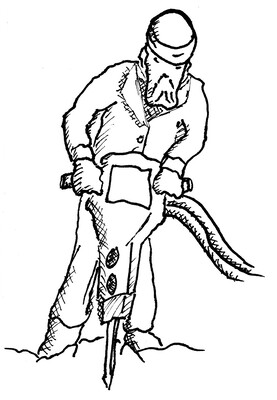

502 Drill Ye Tarriers Drill
transpose
font size
“Tarriers” refers to Irish American workers drilling blasting holes in rock to make railroad tunnels.
[Am]Every [C]morning at [Am]seven o’[C]clock
There’s [E⁷]twenty tarriers a workin’ at the rock,
And the [Am]boss comes [C]along and he [Am]says “Keep [C]still!
And [E⁷]come down heavy on your cast iron drill.”
And [Am]drill ye [E⁷]tarriers, [Am]drill!
Drill ye [G]tarriers, [Am]drill!
For it’s [Am]work all day for the [E⁷]sugar in your tay,
[Am]Down beyond the [E⁷]railway,
And [Am]drill ye [E⁷]tarriers, [Am]drill,
And [Am]blast and fire.
[Am]Our new [C]foreman was [Am]Dan Mc[C]Gann,
By [E⁷]gosh, he was a blame mean man.
Last [Am]week a [C]premature [Am]blast went [C]off,
And a [E⁷]mile in the air went Big Jim Goff.
And [Am]drill ye [E⁷]tarriers, [Am]drill!
Drill ye [G]tarriers, [Am]drill!
For it’s [Am]work all day for the [E⁷]sugar in your tay,
[Am]Down beyond the [E⁷]railway,
And [Am]drill ye [E⁷]tarriers, [Am]drill,
And [Am]blast and fire.
[Am]Next time [C]payday [Am]comes [C]around,
Jim [E⁷]Goff got a dollar short was found.
“What [Am]for” said [C]he; came [Am]this [C]reply,
“You’re [E⁷]docked for the time you were up in the sky.”
And [Am]drill ye [E⁷]tarriers, [Am]drill!
Drill ye [G]tarriers, [Am]drill!
For it’s [Am]work all day for the [E⁷]sugar in your tay,
[Am]Down beyond the [E⁷]railway,
And [Am]drill ye [E⁷]tarriers, [Am]drill,
And [Am]blast and fire.
Now the [Am]boss was a [C]fine man [Am]down to the [C]ground;
He [E⁷]married a lady six feet round.
She [Am]baked good [C]bread, and she [Am]baked it [C]well,
But she [E⁷]baked it harder than the hobs of hell.
And [Am]drill ye [E⁷]tarriers, [Am]drill!
Drill ye [G]tarriers, [Am]drill!
For it’s [Am]work all day for the [E⁷]sugar in your tay,
[Am]Down beyond the [E⁷]railway,
And [Am]drill ye [E⁷]tarriers, [Am]drill,
And [Am]blast and fire.